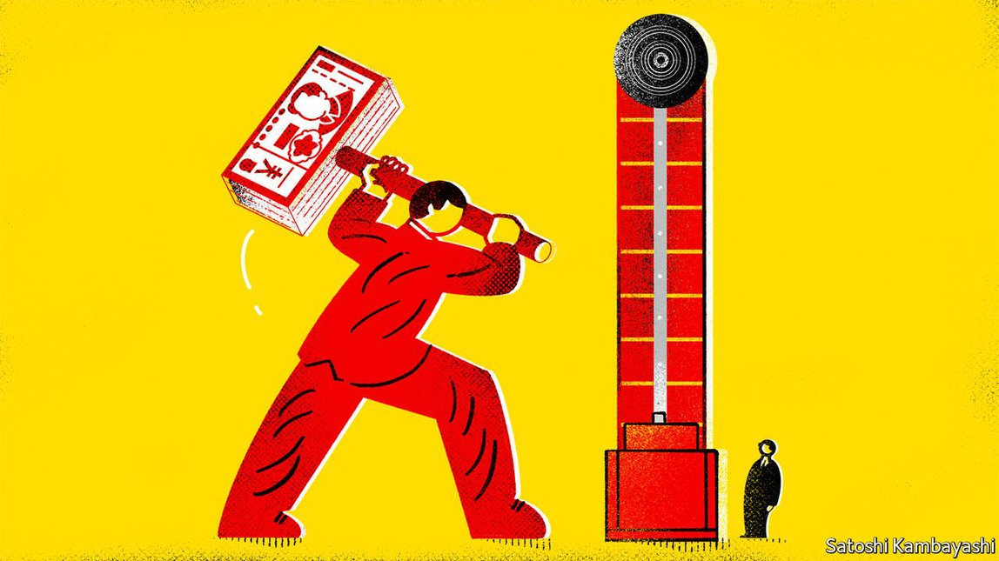

2021-06-30T13:22:55+00:00
Serving a higher purpose
服务于更高目标
服務於更高目標
The Chinese state is pumping funds into private equity
中国政府正向私募股权大举注资
中國政府正向私募股權大舉注資
It sounds too good to be true to private investors—and it might be
在私人投资者听来这好到不真实——可能确实如此
在私人投資者聽來這好到不真實——可能確實如此
STATE CASH is burning a hole in the pocket of Shenzhen’s Communist Party secretary. Wang Weizhong told angel investors late last year that if they set up a fund in the south China tech hub, the government would bear 40% of their losses. For the monstrous 400bn-yuan ($62bn) state fund backing such activity, an investment of 3m yuan—the size of a typical angel investment—is a rounding error. For private investors the invitation sounds too good to be true. It might be.
深圳市委书记王伟中急于把口袋里的国家经费花出去。去年底他告诉天使投资人，如果他们在中国南方的这个技术中心设立一个基金，政府会承担他们40%的损失。支持这类投资活动的政府基金的规模已达到4000亿元人民币之巨，相比之下一笔典型的天使投资——300万元人民币——连个零头都算不上。在私人投资者听来，这个邀请好得叫人难以置信。他们的怀疑可能有其道理。
深圳市委書記王偉中急於把口袋裡的國家經費花出去。去年底他告訴天使投資人，如果他們在中國南方的這個技術中心設立一個基金，政府會承擔他們40%的損失。支持這類投資活動的政府基金的規模已達到4000億元人民幣之巨，相比之下一筆典型的天使投資——300萬元人民幣——連個零頭都算不上。在私人投資者聽來，這個邀請好得叫人難以置信。他們的懷疑可能有其道理。
After several years of loose monetary conditions and bumper dealmaking, liquidity in private equity (PE) in China began to dry up in 2018. New regulations made it harder for banks and insurers to invest. So-called “government-guided” funds set up by local governments or national ministries, by contrast, thrived. Local authorities were encouraged to launch such investment vehicles to lure startups to their cities, along with talent, technology and, eventually, tax revenues. Owing to a lack of in-house investment talent, most of them have acted as limited partners (LPs) in private-sector funds.
在经过几年宽松的货币环境和繁多的交易之后，中国的私募股权 (PE) 的流动性从2018年开始枯竭。新的监管规定使银行和保险公司更难进行投资。与之形成反差的是，由地方政府或国家部委设立的所谓“政府引导”基金却推进得如火如荼。地方政府被鼓励推出这类投资工具来吸引创业公司搬到它们的城市，一并带来人才、技术，以及最终是——税收。由于缺乏自己内部的投资人才，这些基金多数在私营部门基金中充当有限合伙人（LP）。
在經過幾年寬鬆的貨幣環境和繁多的交易之後，中國的私募股權 (PE) 的流動性從2018年開始枯竭。新的監管規定使銀行和保險公司更難進行投資。與之形成反差的是，由地方政府或國家部委設立的所謂“政府引導”基金卻推進得如火如荼。地方政府被鼓勵推出這類投資工具來吸引創業公司搬到它們的城市，一併帶來人才、技術，以及最終是——稅收。由於缺乏自己內部的投資人才，這些基金多數在私營部門基金中充當有限合伙人（LP）。
More than 1,000 government-guided funds have cropped up across China since 2015. By late 2020 they managed some 9.4trn yuan, according to China Venture, a research firm. A national fund focused on upgrading manufacturing technology held 147bn yuan at the last count. One specialising in microchips exceeded 200bn yuan in 2019. Almost every city of note across China operates its own fund. A municipal fund in Shenzhen says it has more than 400bn yuan in assets under management, making it the largest city-level manager of its kind. In the northern city of Tianjin, the Haihe River Industry Fund is putting to work 100bn yuan along with another 400bn yuan from other investors.
自2015年以来，中国各地已涌现了一千多只政府引导基金。据研究公司中国风险投资研究院称，到2020年底，它们管理着约9.4万亿元人民币。一只专注于提升制造技术的国家基金在最近一次统计时持有1470亿元。另一只专注微芯片的基金在2019年持有的资金超过2000亿元。中国几乎每个有名的城市都运作着自己的基金。深圳一只市政基金称其管理的资产超过4000亿元，使其成为同类市级投资管理者中规模最大的一支。在北方城市天津，海河产业基金正投入1000亿元，连同来自其他投资者的4000亿元一起运转起来。
自2015年以來，中國各地已湧現了一千多隻政府引導基金。據研究公司中國風險投資研究院稱，到2020年底，它們管理着約9.4萬億元人民幣。一隻專註於提升製造技術的國家基金在最近一次統計時持有1470億元。另一隻專註微芯片的基金在2019年持有的資金超過2000億元。中國幾乎每個有名的城市都運作着自己的基金。深圳一隻市政基金稱其管理的資產超過4000億元，使其成為同類市級投資管理者中規模最大的一支。在北方城市天津，海河產業基金正投入1000億元，連同來自其他投資者的4000億元一起運轉起來。
As a result, PE in China is now flush with state financing. In 2015 private-sector money made up at least 70% of limited-partner funds pouring into the industry. By the end of 2019, state-backed funds accounted for at least that much. Their dominance has only increased since then; by some counts they hold more than 90% of the money in Chinese funds of funds (ie, those that invest in other funds). According to Chinese media, learning to deal with government funds is now a “required course” for PE managers.
其结果是，中国的私募股权投资如今充斥着国家融资。2015年，私营部门资金至少占到注入该行业的有限合伙人基金的70%。到2019年底，国家支持的基金已经至少占到了这个比例。而此后这种主导地位更是有增无减。根据某些统计，它们持有中国的基金中基金（即投资于其他基金的基金）资金的90%以上。中国媒体称，学习如何处理政府基金现在已是私募股权经理的“必修课”。
其結果是，中國的私募股權投資如今充斥着國家融資。2015年，私營部門資金至少佔到注入該行業的有限合伙人基金的70%。到2019年底，國家支持的基金已經至少佔到了這個比例。而此後這種主導地位更是有增無減。根據某些統計，它們持有中國的基金中基金（即投資於其他基金的基金）資金的90%以上。中國媒體稱，學習如何處理政府基金現在已是私募股權經理的“必修課”。
A degree of state influence is now unavoidable. But whether that is beneficial or not is hotly contested. Some investors and advisers say taking government cash can help align private and public interests. “Government LPs can open doors for you,” says Kiki Yang of Bain, a consulting firm. State fund managers often understand local policy objectives and can steer investors in the right direction, says a venture-capital investor. The influence can go too far, however: Shenzhen Capital, a huge state fund, posted pictures on its website of a meeting it held in December where it helped each of the 42 companies it had invested in to launch a Communist Party committee. These are seen as a way to imbue private companies with party ideology.
某种程度的国家影响已无可避免。但这是否有益，争论很激烈。一些投资者和顾问说接受政府现金有助于协调私人和公共利益。“政府有限合伙人可以作为敲门砖。”咨询公司贝恩的杨琪琪说。一位风险资本投资者表示，政府基金经理通常了解地方政策目标，可以引导投资者朝正确的方向走。然而这种影响有可能走过头：庞大的政府基金深创投在其网站上发布了它在去年12月召开的一次会议的照片，在那次会上它帮助自己投资的全部42家公司分别设立了党支部。这被视为向私营企业灌输党的意识形态的一种方式。
某種程度的國家影響已無可避免。但這是否有益，爭論很激烈。一些投資者和顧問說接受政府現金有助於協調私人和公共利益。“政府有限合伙人可以作為敲門磚。”諮詢公司貝恩的楊琪琪說。一位風險資本投資者表示，政府基金經理通常了解地方政策目標，可以引導投資者朝正確的方向走。然而這種影響有可能走過頭：龐大的政府基金深創投在其網站上發布了它在去年12月召開的一次會議的照片，在那次會上它幫助自己投資的全部42家公司分別設立了黨支部。這被視為向私營企業灌輸黨的意識形態的一種方式。
There are other drawbacks, too. Government funds are “squeezing out other LPs”, says one of China’s top venture-capital investors. Clear mismatches in interests have also surfaced. Members of China’s PE elite cut their teeth at global investment groups such as KKR and TPG, two American firms. Their main aim is to produce hefty returns for LPs. Not so for government-guided funds. “Rarely do you have a guided fund that is chasing returns,” says an adviser to several of them. Instead, state investors are mainly trying to engineer a windfall in local tax revenues by attracting new companies, especially tech groups. Balancing these interests can lead to tensions, says one China-based investor, and often results in investments that hinge on whether or not a company is willing to move to a specific city. Some even fear such problems could gradually lower overall returns for private-sector investors.
还有其他弊端。中国一位顶尖的风险投资者说，政府基金正在“排挤其他有限合伙人”。利益上的明显不一致也开始浮出水面。中国私募股权投资精英圈的成员在美国公司KKR和TPG等全球投资集团中得到初步历练，他们的主要目标是为有限合伙人带来丰厚回报。但政府引导基金不是这样。“你很少看到有哪家引导基金在追求投资回报的。”为几只政府引导基金提供咨询的一名顾问说。相反，政府投资方主要试图通过吸引来新企业——尤其是科技集团——来为地方税收创造意外收获。一位身在中国的投资者表示，尝试平衡这些利益可能会导致紧张拉锯，并且往往导致投资决定取决于一家公司是否愿意搬到特定城市。一些人甚至担心这类问题会逐渐降低私营部门投资者的总体回报。
還有其他弊端。中國一位頂尖的風險投資者說，政府基金正在“排擠其他有限合伙人”。利益上的明顯不一致也開始浮出水面。中國私募股權投資精英圈的成員在美國公司KKR和TPG等全球投資集團中得到初步歷練，他們的主要目標是為有限合伙人帶來豐厚回報。但政府引導基金不是這樣。“你很少看到有哪家引導基金在追求投資回報的。”為幾隻政府引導基金提供諮詢的一名顧問說。相反，政府投資方主要試圖通過吸引來新企業——尤其是科技集團——來為地方稅收創造意外收穫。一位身在中國的投資者表示，嘗試平衡這些利益可能會導致緊張拉鋸，並且往往導致投資決定取決於一家公司是否願意搬到特定城市。一些人甚至擔心這類問題會逐漸降低私營部門投資者的總體回報。
So far, though, the arrangement has worked well for many private funds. With smaller funds dying off over the past few years—either owing to lack of capital or huge losses—competition for target assets has eased a little. The market is healthier, investors say, as private and state capital is channelled to better fund managers.
不过，到目前为止，这种安排对许多私募基金来说效果不错。过去几年中，规模较小的基金不是因为资金不足就是因为巨额亏损而纷纷消失，这让对目标资产的竞争有所缓和。投资者表示，现在市场更健康了，因为私人和国家资本被引导到更好的基金经理那里。
不過，到目前為止，這種安排對許多私募基金來說效果不錯。過去幾年中，規模較小的基金不是因為資金不足就是因為巨額虧損而紛紛消失，這讓對目標資產的競爭有所緩和。投資者表示，現在市場更健康了，因為私人和國家資本被引導到更好的基金經理那裡。
But will it last? One lingering concern for some PE investors is that government funds might dispense with the middlemen, and do more of their own direct investing. Several large government funds have been recruiting from private-sector banks and law firms, bolstering their ability to cut deals, notes a lawyer who works with them. “They are starting to compete with us directly,” says the venture-capital investor. Private investors will appreciate state cash much less when they are vying to outbid it. ■
但这能持续下去吗？一些私募股权投资者有一个挥之不去的担忧：政府基金可能会撇开中间人，更多地开始自己直接投资。一位为政府基金提供服务的律师指出，几只大型政府基金从私营银行和律师事务所挖人已有一段时日，它们想要增强自己达成交易的能力。“它们开始与我们直接竞争了。”这位风险投资者说。当私人投资者需要努力比国家出价更高，他们对国家的钱就喜欢不起来了。
但這能持續下去嗎？一些私募股權投資者有一個揮之不去的擔憂：政府基金可能會撇開中間人，更多地開始自己直接投資。一位為政府基金提供服務的律師指出，幾隻大型政府基金從私營銀行和律師事務所挖人已有一段時日，它們想要增強自己達成交易的能力。“它們開始與我們直接競爭了。”這位風險投資者說。當私人投資者需要努力比國家出價更高，他們對國家的錢就喜歡不起來了。